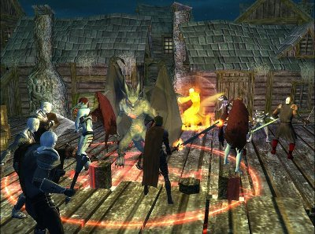
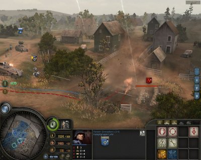
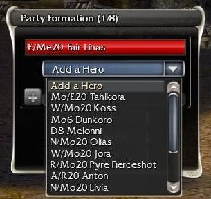
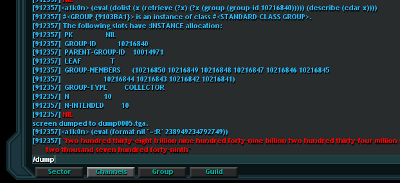
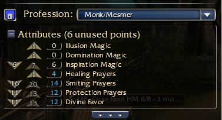
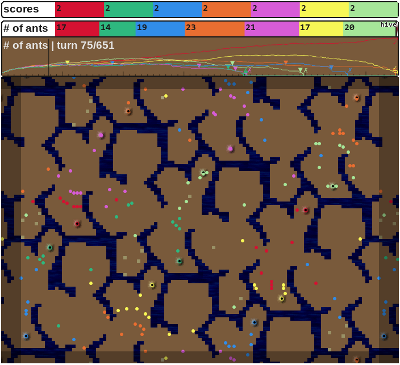
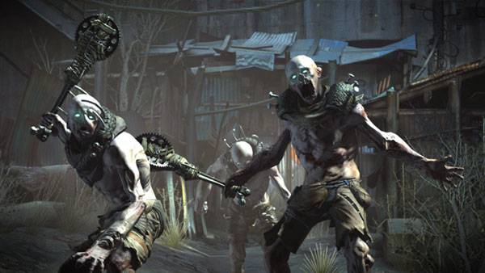
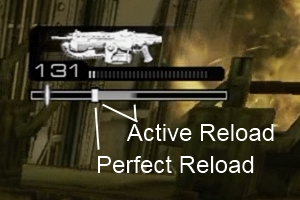

March 30, 2012 - Tagged as: tr.
Bir süredir aklımı kurcalıyor, benim şu ana kadar oynarken en çok zevk aldığım oyun bariz bir şekilde Neverwinter Nights. Multiplayer’ı saçma derecede uzun ömürlüydü, sürekli birbirinden alakasız bambaşka maceralara koşabiliyordunuz. Bu şu şekilde oluyordu, oyunun çok gelişmiş bir toolkiti vardı, öyle ki oyunun kendi compaignleri bile bununla yapılmıştı(ve bununla yapılan haritalar herhangi bir derlenme işleminden geçmiyordu, orjinal compaignleri düzenleyebiliyordunuz mesela). Bunun sayesinde oyuncular kendi senaryolarını, veya PvP haritalarını yapabiliyorlardı. Haritalarında kendi kurallarını belirleyebiliyor, ara sahneler yapabiliyor, farklı oynanış özellikleri ekleyebiliyorlardı(mesela mancınıklar).
Şimdi “Oblivion/Skyrim’de de var bu” diyebilirsiniz(NwN kadar esnek mi bilmiyorum ama sandbox türü bir harita yapım araçları vardı sanırım, ben hiç denemedim). Bana göre Oblivion/Skyrim/tüm Bethesda oyunları konsept/oynanış/fikir olarak kötü olduklarından umurumda değiller ve saymıyorum heheh.
Eski sayılabilecek bir RPG oyuncusu olarak(en azından Baldur’s Gate 2, Icewind Dale, The Temple of Elemental Evil, Neverwinter Nights gibi yapımları yakalayabildim) bir kere benim oynamam için bu tarz bir toolkit/sandbox şart. Şu anda hala NwN oynayan adamlar var. Binlerce harita var ki oynadığım dönemden hatırlıyorum, orjinal compaignle kapışabilecek kalitede senaryolar, süper zekli team PvP haritaları vardı.
Ben buna ek olarak bir de şöyle birşey istiyorum: NPCleri programlayabilmek ve bu imkanı oyunculara vermek. Yani örneğin yanına bir henchman alıyorsan nasıl davranmasını istediğini ona yeterince esnek bir şekilde anlatabilmelisin. Sen oyunda olmadığında birşeyler yapmaya edebilir. Veya örneğin oyunculara 10 tane karakter verip bunları programlama imkanı vermek güzel olabilir. Harita yapımcıları zaten NPCleri bir şekilde programlıyorlar, ben bu imkanı oyunculara vermek istiyorum.
Bir kullanım şöyle olabilir, bir RTS düşünün, tarafların 20 çeşit birimi olsun, her birimin farklı bir API’ı olacak ve bunları kullanarak birimdeki her bir elemanı programlayabileceksin. Buna göre saldıracaklar, savunacaklar, birbirlerine destek olacaklar. Sen ya oynamayacaksın(sadece programlayacaksın ve programlar savaşacak, Google AI Challange’da olduğu gibi) ya da bir karakteri falan oynatacaksın. Etrafında senin programladığın elemanlar işlerini yapmaya devam edecekler(kaynak toplamak, haritayı keşfetmek, savaşmak vs.). Ve bu adamlarla çokoyunculu arenalarda dövüşeceksin mesela. İyi programcı kazansın :) .

Burda birkaç karakterin oyuncuların programladığı botlar olduğunu düşünün
İkinci bir kullanım da orduları programlamak yerine bir tür MMORPG’de az sayıda adamı programlamak olabilir. Sen yokken kaynak toplayabilir. Amelelik yapabilir. Dükkanda durabilir :P .
Hayalgücü sınır tanımıyor tabii ki, implementasyon nasıl olur diye pek düşünmüyorum şu aşamada ama şu fikir bana heyecan veriyor açıkçası: bir MMO’da programladığın karakteri kiralamak :) . Örneğin bazı düşmanlarla başetmek için programlanmış bir monk karakterini bir görev için başkarına vermek gibi. Tabii düşmanlarının da bazı karakteristiklerinin olmasını gerektiriyor ve bu da bambaşka bir problem. Aslında sadece amelelik yapsalar(kaynak toplama, bazı görevleri yapma gibi) bile yeterli olur.
Botları şöyle düşünün, pek çok multiplayer oyunda zaten bilgisayar kontrollü dost birimler oluyor. RTS’lerdeki skirmish modlarında alıştırma yaptığımız dostlar veya RPG’lerdeki mercanary/henchmen gibi karakterler gibi. İşte yine bunların olduğu ama bunları programlama imkanının oyunculara verildiği bir dünyadan bahsediyorum.
Aslında uygulama çok farklı şekillerde olabilir, örneğin direkt olarak Google AI challenge’daki gibi sadece botların savaştığı bir ortam. Ama ben daha çok yanında 1 veya 2 tane programlanmış bot ile savaştığın bir RPG hayal ediyorum.
Biraz teknik detaylardan bahsedeyim.
Botlara oyunculara verdiğimiz her imkanı sunulmalı. Örneğin bir oyunu ekrana baktığında neleri görüyor? Minimapdaki düşman birimleri, çevre şartları(denizler gibi gidilmesi imkansız yerler, tepeler gibi gitmenin savaşta avataj sağlayabileceği yerler), düşman birimlerinin kendileri, düşman birimlerinin sağlıkları, kendi birimlerinin tamamı gibi. Bu gibi verilerin hepsine botlar da erişebilmeli.
Aynı şekilde hareket kabiliyeti olarak da oyuncuyla bot aynı olmalı. Bunu yapmanın benim için en bariz ve garanti yolu şu; oyun iki parçadan oluşacak. Bir parça sunucu tarafında çalışacak, oyundaki oyuncular arasındaki iletişimi sağlayacak, ve her bir oyuncudan yönettikleri her bir birim için girdi alıp(komutlar), her bir birimin çıktılarını gönderecek. Oyuncuların tarafında ise oyunlar tüm birimlerden gerekli girdileri okuyup gerekli komutları yollayak program olacak. Oyuncunun yönettiği birim ile programlanmış birimler arasındaki tek fark, oyuncunun yönettiği birimin çıktılarının ekrana yansıtılıp, girdilerinin klavye/mouse’dan alınıyor olması olacak.

Bu sahnede oyuncunun ekrana bakarak elde edebileceği tüm bilgileri botların da elde edebilmesi lazım.
Bu şekilde aslında bir oyuncu ile bot tamamen aynı imkanlara sahip olacaklar(aynı arabirimden veri okuyup aynı arabirimle komut gönderecekler). Sunucunun hangi karakterin oyuncu, hangi karakterin bot olduğunu bilmesine bile gerek yok.
Bu fikirde beni en çok korkutan şey, botların değerlendirmesi gereken çok fazla faktörün olabilmesi. Örneğin bir RTS düşünelim, her bir bot:
Gibi parametreleri sürekli kontrol etmeli. Benim aklıma gelmeyen birçok şey olduğu kesin, buna rağmen çok fazla parametre var. Ben bunların yapılamayacağını düşünmüyorum. Şöyle düşünelim, bugün piyasadaki her strateji oyununda alıştırma amaçlı botlar oluyor. Tamam bunlar hile yapıyor(oyuncuyu görüp görmemiş gibi davranıyor vs.) ama ben açıkçası hile yapmalarının sebebinin zorluğu ayarlamak olduğunu düşünüyorum. Örneğin “insane” gibi bir zorlukta oynarsanız düşmanın bariz bir şekilde sürekli sizin olmadığınız taraftan saldırdığını falan farkedersiniz. “insane” bu şekilde olabiliyor çünkü.
Başlangıç programları olabilir. Örneğin 10 farklı örnek program olur. Yeni başlayanlar bunları değiştirerek veya bir araya getirerek oynamaya başlar. RPG örneğinde de, örneğin Neverwinter Nights’daki henchmanler, sınıflarının özelliklerine göre farklı taktikler uygulayabiliyordu. Tüm bu taktikleri başlangıç programları olarak oyuncuya verdiğimizi düşünelim. İsteyen oyuncular tamamen bu programlarla devam edebilir, veya bu programlar üzerinde değişiklik yaparak işe başlarlar.
MMO örneğinde de aklıma şey geldi, şu anda piyasadaki büyük ihtimalle her MMO için botlar vardır. Ben şu ana kadar bir kere bot kullandım, o da Ragnarok Online’daydı. Bot istediğin bölgede dolaşarak yaratık kesiyor, gerektiğinde dinleniyor, çantası dolduğunda eşyaları satıp, sağlık iksirleri vs. alıp savaşa geri dönüyordu. Üstelik tüm bu program aslında bir hack. Yani Ragnarok Online oyunculara bot yapsın karakter yönetsin diye bir arayüz sağlamıyor. Benim durumumda çok daha kolay olacak. Buna benzer bariz işlemleri yapan bir program oyunculara verilebilir.
Bir örnek de Guild Wars’da var. Bilgisayar kontrolündeki birimler çoğu zaman gayet mantıklı hareket ediyorlar, çok fazla farklı durumu değerlendirebiliyorlardı.

Guild Warsdaki botlara bir örnek, bunlar örneğin aynı sınıfta olsalar bile farklı davranışlara sahiplerdi.
Uygulamanın çok zor olmaması açısından GW tarzı birşey mantıklı olabilir. Tamamen bağımsız hareket eden bir karakteri(bir MMO’da oyuncu bir görevdeyken şehirde takılacak bir bot gibi) programlamak çok zorolabilir, GW’da henchmanler oyuncunun etrafında duran savaşçılardı. Yani aslında sadece savaş için programlanmışlardı, onun dışında tek yaptıkları oyuncuyu takip etmekti(takip sırasında da tek dikkat ettikleri tank biriminin önden, monk gibi destek birimlerinin arkadan takip etmesi gibi bariz şeylerdi).
Hahah buraya geleceğini tahmin etmemiştiniz değil mi :) . Konuyu buraya bağlamazsam ölürdüm.
Hedef kitle sadece programcılar olmamalı. İsteyen bu oyunla program öğrenebilmeli. Hep programlama öğrenebilmek için fantastik ortamlar hayal etmişimdir(scratch gibi şeyler mesela). Güzel bir fırsat olabilir.
Dil mümkün olduğunca basit olmalı, herhangi bir programlama diline ait spesifik şeyler içermemeli, örneğin syntax. Basit ama esnek olmalı. Örneğin _inheritance_a izin veren bir sınıf sistemi olmayabilir, ama isteyen kullanıcı tablolar(map) ve method çağrıları için bir yardımcı fonksiyon ile bunu yapabilmeli.
Benim aklımdaki dil aslında Scheme’e çok benziyor. Macroları çıkar, birinci sınıf fonksiyonlar, closure’lar falan olmazsa olmaz ama immutability’ye Scheme kadar önem vermemeli. Veri yapıları olarak listeler ve mapler ile herşeyi yapabiliriz. Ama bunlar birbirinden farklı olmalı(Lua veya Javascript gibi değil yani).
Yanlız şöyle bir problem var, fonksiyonel programlamaya aşina olmayanlar map, reduce, filter gibi higher-order fonksiyonlar veya list comprehensionlar yerine dögüleri tercih edebilir. Bir de koleksyonlar üzerinde map, reduce, filter gibi fonksiyonlar yardımıyla işlem yapacaksak bir miktar lazy-evaluation da gerekir. Ama diğer yandan bir fonksiyonel programcı imperative bir tarzda kolayca yazabilir.
Bu iş için aslında Lua iyi gibi, C/C++ interop seçenekleri çok iyi, imperative dil ama güzel fonksiyonel özellikleri var. Ama bence biraz fazla kompleks(gerizekalı tablo veri yapısı, first-class environmentlar, coroutine’ler). JVM ortamı kullanılacaksa bir Jython altkümesi hazırlanabilir.
Aslında dil hakkında karar verilmesi gereken çok şey var ama her halükarda Scheme tarzı bir Lisp dili implementasyon açısından en kolay olur gibi. Burda hiçbir şart altında yapılmaması gereken şey bence, programcılara birden fazla alternatif sunmak. Örneğin “oyun kendi X diliyle programlamana imkan veriyor ama C++ biliyorsan şu API ile C++ kullanabilirsin” gibi.
İşin bir de debugging kısmı var. Vendetta Online’da adamlar sunucu tarafında bir Common Lisp yorumlayıcısı(SBCL) çalıştırıp buna benzer işler yapıyorlarmış mesela:

Vendetta Online Lisp REPL
Buna benzer bir debug ekranı olabilir. Oyuncu yönettiği botların tüm değişkenlerine, botların çevre değişkenlerine vs. erişebilir. Kodda print ettiği şeyler bu ekrana yazdırılır vs.
Guild Wars oynayan varsa hatırlayacaktır, aşırı taktiksel bir oyundu ve wikilerde farklı görevler için ayarlanmış takımlar oluşturulurdu. Görevdeki düşmanlara ve amaçlara göre alınması gereken skiller, takımda bulunması gereken sınıflar, kimin nasıl oynaması gerektiği gibi bilgiler bulunurdu. Herkes kendi build’ini paylaşırdı. Hatta bir yerden sonra build kaydedip yükleme özelliği eklenmişti, buildlerinizi bir dosya olarak istediğinizle paylaşabiliyordunuz.

Guild Wars’daki buildler. Sol üstteki diskete bakın.
Bir müddet sonra işler bu oyunda da öyle olabilir. Oyuncular wikilerde kod parçaları paylaşabilir veya direkt programlarını paylaşabilir. Bunda bir sorun yok.
Ama sorun bence bir yerden sonra çoğu kişinin aynı programları kullanmasıyla başlar. Çok güçlü bir program yazılıp, paylaşılırsa, bir yerden sonra herkes kullanacaktır. Bunun önü nasıl alınır bilmiyorum. Ya da alınmalı mıdır? Rekabetçi bir ortam oluşturup paylaşımı engellemek nasıl olur? Bunları henüz bilmiyorum.
Ehueahe. Şunu kastediyorum, bir yerden sonra taş gibi reflekslere sahip, hiç hata yapmayan programlar oyunculardan daha kullanışlı bir hale gelmesin? Bunu nasıl sağlarız? Sinyallerin alınmasında gecikme koyarak? Veya direkt olarak daha mı güçsüz yapılmalı? Burda düşünülecek çok şey var.
Aslında bu konu şurdan aklıma esti, eski bir oyuncu olarak aylardır oyun oynamıyorum. Hiçbir oyun sarmıyor. Şimdi düşündüğümde oynuların çoğunun sadece reflekslere yönelik gereksiz aksiyon oyunları olduğunu farkediyorum. Anlatacağı birşey yok, bir konu yok, bir amaç yok, bir heyecan yok, orjinal bir oynanış yok, düşünmeyi gerektirecek birşey yok. Belki de böyle olmalı. Ve eğer böyle olacaksa ben oynamak istemiyorum açıkçası. Ama ilginç olan aslında çoğu zevkli bile değil. İlk Neverwinter Nights’da beni çeken ne vardı? Sanırım şuydu, oyunculara oyunu geliştirme şansı veriyordu, ve bunu multiplayer ile birleştiriyordu(Oblivion/Skyrim’in yapamadığı bir kısım mesela). Tamam ben hiç harita yapmamış olabilirim, ama en azından sürekli farklı tecrübeler yaşıyordum ve bu tecrübeleri gerçek oyuncularla yaşıyordum.
Bir problem çözme, program geliştirme gibi olayları oyunun tam içine koymanın bir yolu gibi geldi bu anlattıklarım. Saatlerce Starcraft oynayıp, bir sürü gereksiz refleks geliştireceğime, kafamı kullanmaya çalışmak daha cazip geliyor. Üstelik yapmak istediğim şey oyuncuyu oyundan kaldırmak falan değil, sadece programlanabilir botları oyunun tam ortasına yerleştirmek. RTS türü bir oyuna bu ne kadar güzel/kullanışlı/kolay olur bilmiyorum ama bir RPG için hayal ettikçe heyecanlanıyorum açıkçası.

Google AI Challange
Kısaca bir programcı olarak hayalim: Oyuncunun hazırlayabileceği, değiştirebileceği, geliştirebileceği bir dünya(şimdi düşündüm de, Lisp’i de bu yüzden sevmiyor muyuz? Dil o kadar esnek ki istediğimiz özelliği kolayca ekleyebiliyoruz), opsiyonel olarak programlanabilir kısımlara sahip olacak(illa kod yazma olarak düşünülmesin, yeterince esnek olacaksa her türlü olur) ve multiplayer olacak. Yaratıcılık ve yetenek tam içinde olacak, ama bunlara sahip olmayanları dışlamayacak(başkalarının haritalarında oynayabileceksin veya hazır programlanmış botları kullanabileceksin gibi). Minecraft bir yere kadar başardı, ben biraz daha farklı bir boyut kazandırmak istiyorum.
Bir de aklıma gelmişken oyunlarda görmek istediğim birkaç alakasız olaydan bahsedeceğim.
Dört örnek vereceğim, Gears of War, Rage, Stalker ve Battlefield 3. Burda bahsedeceklerim çoğu zaman aksiyon oyunları için geçerli.
Rage’de bir olay çok dikkatimi çekti, yaratıklar üzerinize koşarken tüm çevre şartlarını kullanıyor, sağa sola zıplıyor/tırmanıyor ve vurmak çok güçleşiyor. Bunları tamamen rastgele bir şekilde yapıyorlar. Örneğin düşman üzerinize koşarken kaydedin, load edip birkaç kere deneyin, düşman farklı farklı manevralar yapacaktır. Oynanabilirliği çok çok arttırıyor bence.

Rage’deki adamlar işte bunlar
İşte bu rastgeleliği mümkün olduğunca arttırmak istiyorum. Karakterlerin yapabileceği farklı hareketler olmalı ve bu hareketlerden rastgele seçim yapmalı. Oyuncuya çok daha iyi bir tecrübe sunacaktır.
İkinci örnek Stalker, Stalker gibi gerizekalı bir oyunu neden oynuyor insanlar? Ben tek bir sebep görebiliyorum, değişen bir dünya. Oyuncudan bağımsız olarak hareket eden bir sürü bilgisayar kontrollü karakter var. Bunlar kendi aralarında savaşıyor, bölgeler el değiştiriyor, dünya değişiyor. Ve bu oynanabilirliği çok arttırıyor. İşte bunun gibi oyuncunun tahmin edemeyeceği/oyuncudan bağımsız olarak değişen faktörler olmalı. Stalker’ı düşündüğünüzde bu kadar dandik bir oyunun bu kadar hastasının olmasının tek sebebi bu. Bir de yanında başka güzel özellikler falan olsaymış deli olacakmış demek ki.
Gears of War’daki reload sistemi. Şöyle birşey:

Burda reload etmeye başlamak için tuşa bastığınızda, bu beyaz çubuk barda ilerliyor, eğer ilk parlak kısımda bir kere daha tuşa basabilirseniz damage boost kazanıp hızlıca reload ediyorsunuz. Gri kısımda basarsanız yine hızlı reload yapmış oluyorsunuz ama damage boost almıyorsunuz.
Bunun oynanabilirliğe katkısı çok büyük, birincisi, bu alanların genişliği oyunun durumuna göre değişiklik gösteriyor. Örneğin bazen geniş oluyor, bazen dar. Çatışmadaysanız daha bir dar oluyor, ama normalde de farklı uzunluklarda çıkıyorlar aslında. Bu sayede reload işini reflekse bağlamak zorlaşıyor.
İkinci kısım da, reload işini dikkat gerektiren bir iş haline getiriyor olması. O anda karakter gerçekten savaşta ve dikkatini silahına vermesi gerekiyor, bunun gibi.
Mesela neden reload sırasında kamera karaktere yaklaşmıyor? Sonuçta reload yapan karakteri düşündüğünüzde adam dikkatini silahına veriyor ve çevreye eskisi kadar duyarlı olmaması lazım. Ama yaptığı işi hiçbir şekilde etkilemeden bir yandan reload yapma olayı açıkçası bana sıkıcı ve oyunun tadını kaçıran birşey gibi geliyor. Sonuçta artık reload sisteminin getirdiği hiçbir stratejik derinlik yok oyuna. Refleks haline geliyor, arada basıyorsunuz işte.
Son olarak Battlefield 3’deki bir özellik. Adamlar şu ana kadar belki de hiçbir oyundu kullanılmayan(en azından başarılı bir şekilde kullanılmayan) bir özellik eklediler ve oyuna bambaşka bir stratejik derinlik kazandırdılar: Baskı ateşi. Battlefield 3’de etrafınıza düşen mermiler toz kaldırıyor ve önünüzü görememenize sebep oluyor. Bu şekilde örneğin karşınızda bir düşman M249 ile sizin bulunduğunuz siperlere, duvarlar vs. ateş açtığında, kilitlenip kalıyorsunuz. Büyük ihtimalle bundan 1-2 dönem sonra her FPS’de göreceğimiz bir özellik olacak. Ben bu oyuna bir FPS’de baskı ateşi diye bir olay olduğunu görmemiştim.
Böyle işte, oyunlarda görmek istediğim hareketler bunlar. Ludum Dare 24’e yine tek başıma katılacağım ve bu sefer amacım en azından izometrik bir dünya oluşturabilmek ve üzerinde birşeyleri hareket ettirebilmek olacak. Ludum Dare 25’de de oyunu tamamlayabilirim sanırım :)